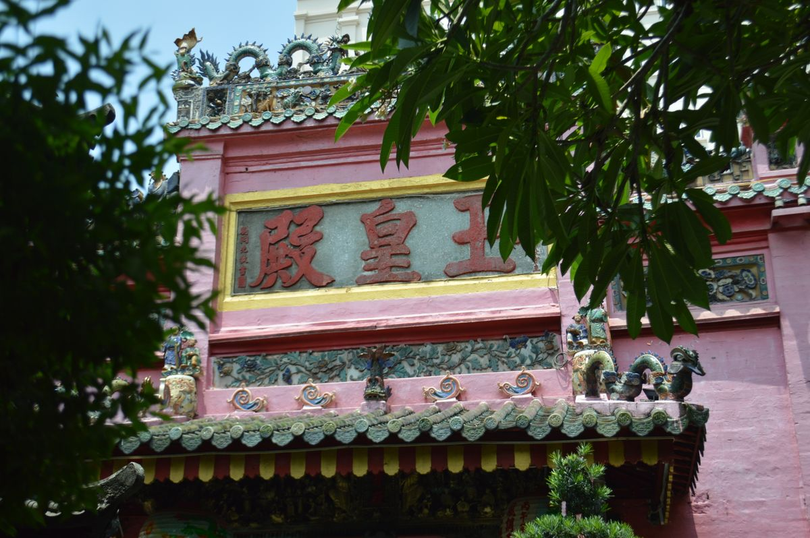
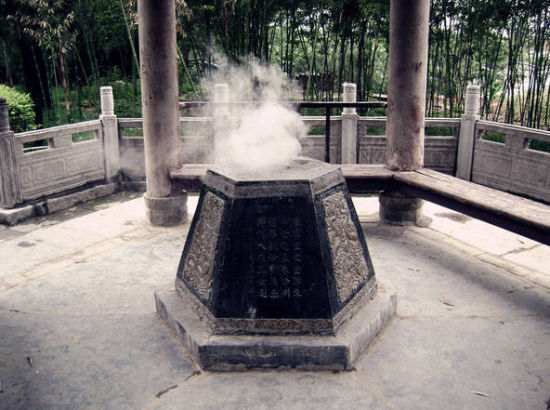
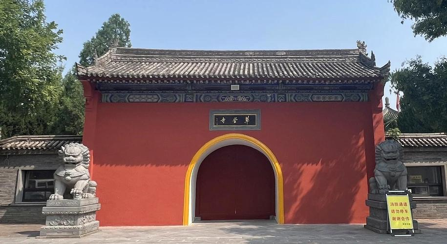
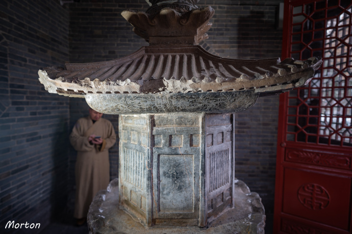
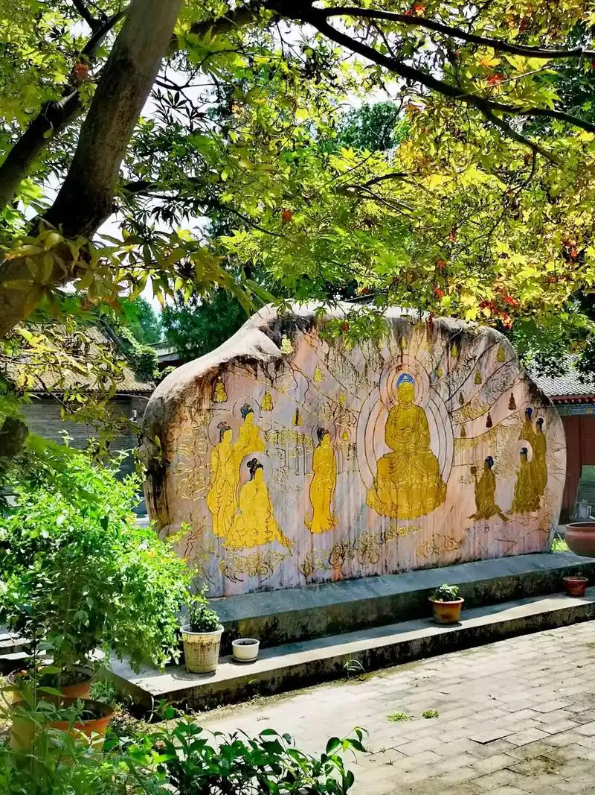
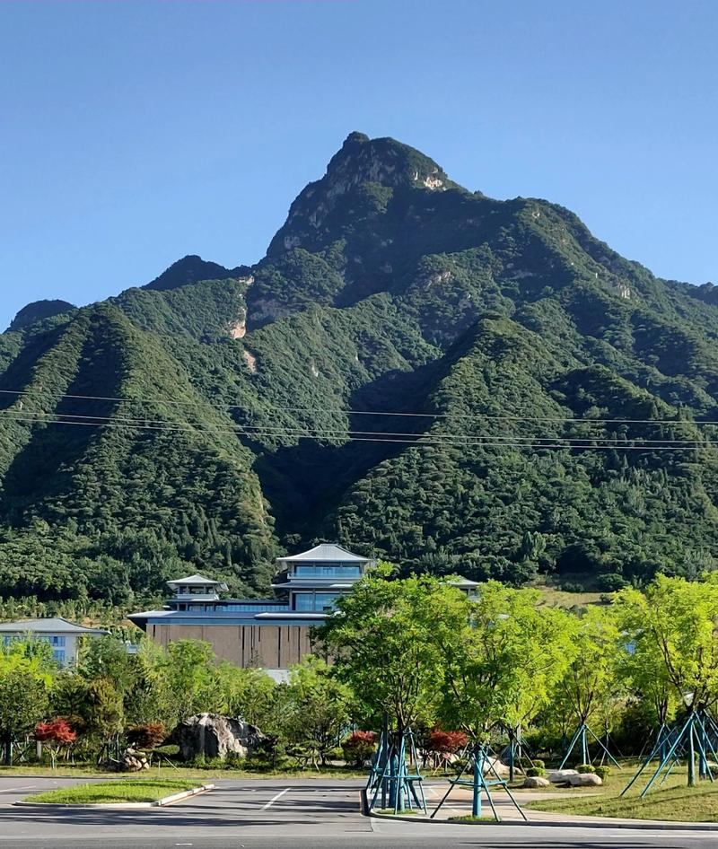

草堂寺位于西安市鄠邑区（原户县）东南的圭峰山北麓，是中国佛教史上最重要的译经道场之一。东晋隆安五年（401年），后秦王姚兴将西域高僧鸠摩罗什迎至长安，尊为国师，并为他修建了草堂寺作为译经场所。鸠摩罗什在此主持翻译佛经长达十二年，率领八百弟子，共译出《金刚经》《法华经》《维摩诘经》等经典35部294卷——这些译文至今仍是中国佛教徒日常诵读的版本。
"草堂"之名源自一个朴素的细节：鸠摩罗什译经时，因茅草屋顶漏雨，他随手拔取寺旁的茅草覆于屋顶，遂名"草堂"。这座看似简陋的草堂，却成为了改变中国佛教史走向的精神圣地。鸠摩罗什圆寂后，其舌舍利保存于寺中舍利塔内——传说他生前曾发愿"若所译经文无谬，舌不焦烂"，火化后舌根果然完好，成为千古奇谈。

"草堂烟雾"的"烟雾"究竟从何而来？寺内有一口古井，名曰"烟雾井"，古时此井常年向外升腾白色雾气，氤氲缭绕于竹林和殿堂之间，远远望去如同一层轻纱笼罩寺院——这便是"草堂烟雾"的由来。关于烟雾的成因，有科学解释说是地热蒸汽遇冷凝结所致，也有人认为这与圭峰山的地质构造有关。但当地百姓更愿意相信传说：这烟雾是鸠摩罗什译经时焚香祷告的香烟，千年不散。
加上草堂寺地处秦岭北麓，秋冬季节山间云雾与井中蒸汽交融，寺周竹林在雾气中若隐若现，确有"仙境"之感。古人将这自然与人文交织的奇特景象列入关中八景，既是对自然奇观的欣赏，更是对鸠摩罗什这位文化巨人的敬意。
草堂寺在中国佛教史上具有特殊地位——它是汉传佛教三论宗和成实宗的祖庭，也是日本日莲宗信徒心中的圣地。鸠摩罗什在此译出的《中论》《百论》《十二门论》奠定了三论宗的理论基础，而《妙法莲华经》则是日莲宗的根本经典。每年有大量日本佛教信徒不远万里来草堂寺朝拜祖庭。寺内至今保存着鸠摩罗什舍利塔（唐代所建，全国重点文物保护单位）、唐代《圭峰定慧禅师碑》等珍贵文物。
鸠摩罗什临圆寂前与众僧告别："自以暗昧，谬充传译。凡所出经论三百余卷，唯《十诵》一部未及删繁，存其本旨，必无差失。愿凡所宣译，传流后世，咸共弘通。"




| 地址 | 西安市鄠邑区草堂镇草堂寺 |
|---|---|
| 开放时间 | 08:00 — 17:30 |
| 门票 | 30 元 |
| 交通 | 西安市区自驾经西太路（约50分钟）；或乘公交至鄠邑区换乘至草堂寺 |
| 小贴士 | 秋冬季节清晨是观赏"草堂烟雾"效果的最佳时机；寺内竹林和古树极有禅意，适合静心游览；可结合附近圭峰山徒步和高冠瀑布一日游 |